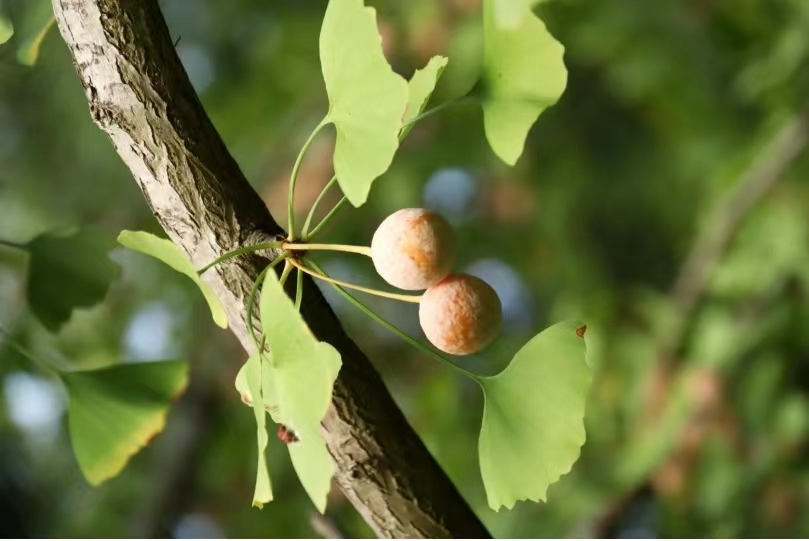
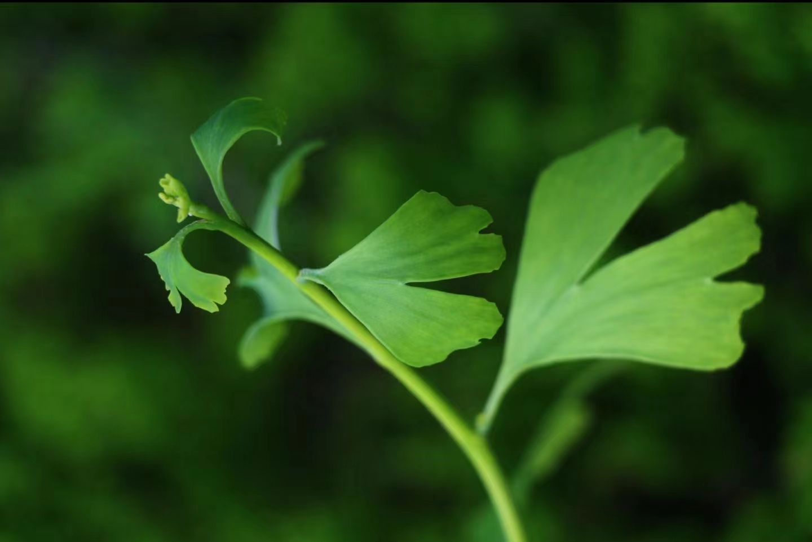
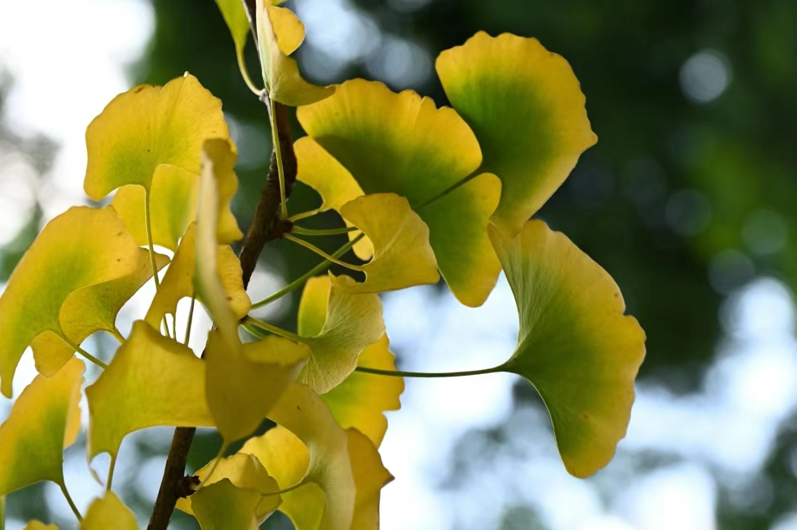
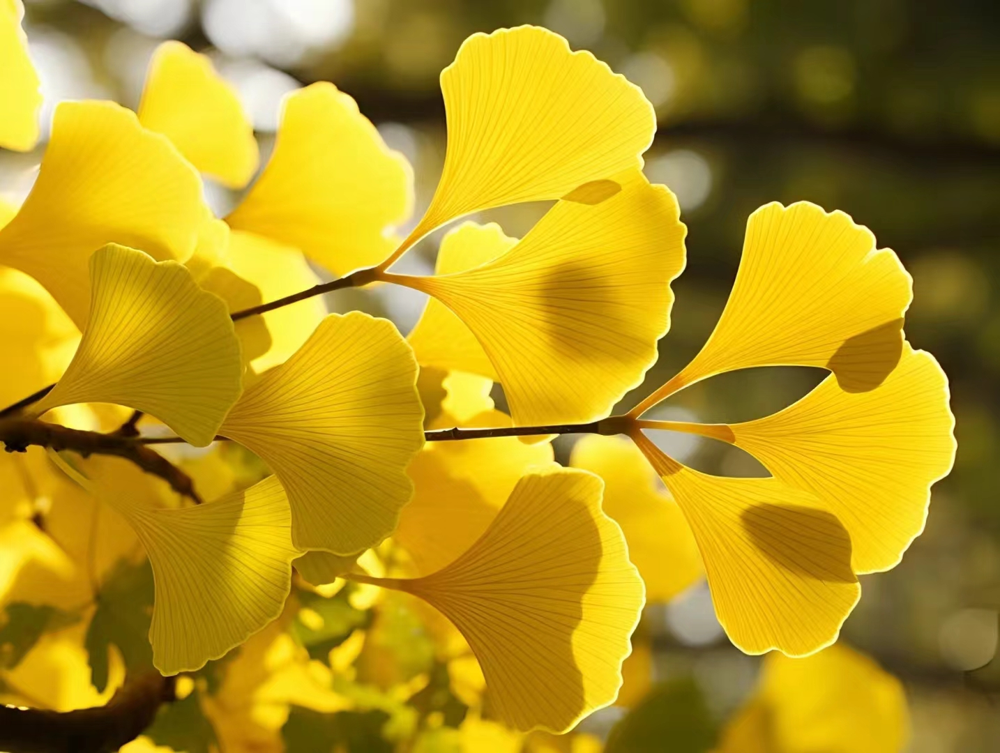

形态特征
生活型:乔木;
株:高达40米，胸径4米
茎:树皮灰褐色，纵裂
枝:大枝斜展，一年生长枝淡褐黄色，二年生枝变灰色;短枝黑灰色
叶:叶扇形，上部宽5-8厘米，上缘有浅或深的波状缺刻，有时中部缺裂较深，基部楔形，有长柄;在短枝上3-8叶簇生
花:雄球花4-6生于短枝顶端叶腋或苞腋，长圆形，下垂，淡黄色;雌球花数个生于短枝叶丛中，淡绿色。
株:高达40米，胸径4米
茎:树皮灰褐色，纵裂
枝:大枝斜展，一年生长枝淡褐黄色，二年生枝变灰色;短枝黑灰色
叶:叶扇形，上部宽5-8厘米，上缘有浅或深的波状缺刻，有时中部缺裂较深，基部楔形，有长柄;在短枝上3-8叶簇生
花:雄球花4-6生于短枝顶端叶腋或苞腋，长圆形，下垂，淡黄色;雌球花数个生于短枝叶丛中，淡绿色。

分布地
国内产地:仅浙江天目山有野生状态的树木，银杏的栽培区甚广:北自东北沈阳，南达广州，东起华东海拔40-1000m地带，西南至贵州、云南西部(腾冲)海拔2000m以下地带均有栽培
国外分布:朝鲜、日本、欧美各国庭院亦有栽培。
国外分布:朝鲜、日本、欧美各国庭院亦有栽培。

习性
海拔:500-1000m;
物候期:花期3月下旬至4月中旬，种子9-10月成熟，生活在酸性(pH值5-5.5)黄壤、排水良好地带的天然林中，常与柳杉、榧树、蓝果树等针阔叶树种混生，生长旺盛。
物候期:花期3月下旬至4月中旬，种子9-10月成熟，生活在酸性(pH值5-5.5)黄壤、排水良好地带的天然林中，常与柳杉、榧树、蓝果树等针阔叶树种混生，生长旺盛。

濒危原因
银杏是世界上最古老的孑遗植物之一。别看它现在随处可见，但目前的银杏绝大多数都是人工栽培的。
判断植物珍稀程度的标准，数量并非是决定性的因素，其基因的多样性和野生种群的分布情况才是最重要的。目前银杏野生种群的分布和数量都极为稀少，且城市行道树中的银杏多为“近亲繁殖"，无法增加银杏的基因多样性。只有天然存在的银杏，才能代表这个物种的遗传多样性，也只有保护好天然的银查资源，才能直正保护这个古老的物种。
